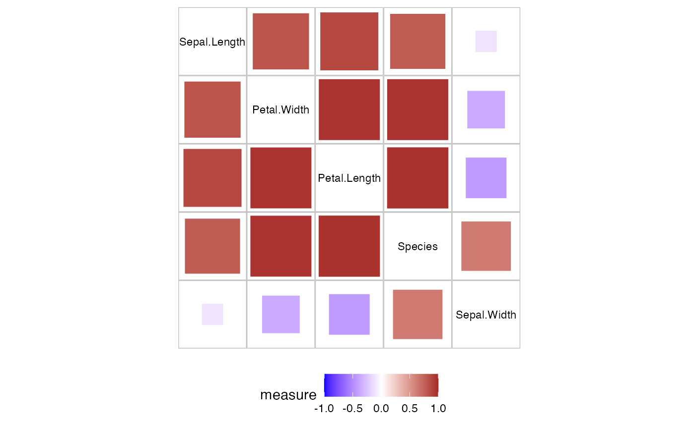
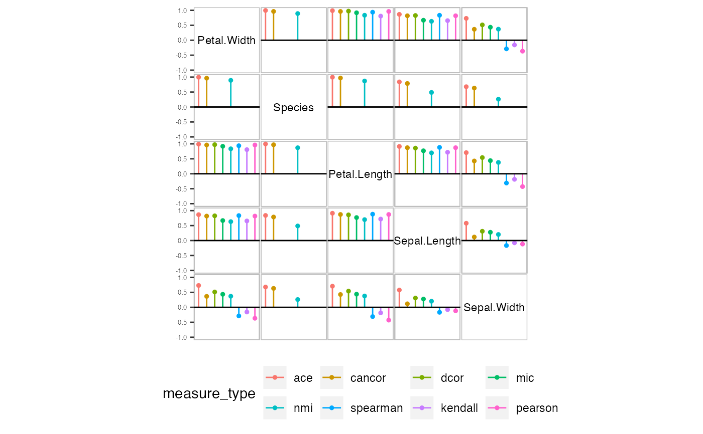

Pairwise plot in a matrix layout
plot_assoc_matrix.RdPlots the calculated measures of association among different variable pairs for a dataset in a matrix layout.
Arguments
- lassoc
A tibble with the calculated association measures for the lower triangle of the matrix plot. Must be of class
pairwise,cond_pairwiseormulti_pairwise.- uassoc
A tibble with the calculated association measures for the upper triangle of the matrix plot. Must be of class
pairwise,cond_pairwiseormulti_pairwise. If NULL (default) the matrix plot is symmetric.- glyph
A character string for the glyph to be used for lassoc with "pairwise" class. Either "square" or "circle".
- var_order
A character string for the variable order. Either "default" for ordering using Dendser or a user provided variable order.
- limits
a numeric vector of length specifying the limits of the scale. Default is c(-1,1)
Examples
plot_assoc_matrix(calc_assoc(iris))
#> Warning: Removed 20 rows containing missing values (`geom_text()`).

plot_assoc_matrix(calc_assoc(iris,"Species"))
#> Warning: Removed 4 rows containing missing values (`geom_segment()`).
#> Warning: Removed 4 rows containing missing values (`geom_point()`).
#> Warning: Removed 36 rows containing missing values (`geom_text()`).
#> Warning: Removed 4 rows containing missing values (`geom_hline()`).

plot_assoc_matrix(calc_assoc_all(iris))
#> Warning: Removed 5 rows containing missing values (`geom_segment()`).
#> Warning: Removed 5 rows containing missing values (`geom_point()`).
#> Warning: Removed 120 rows containing missing values (`geom_text()`).
#> Warning: Removed 5 rows containing missing values (`geom_hline()`).